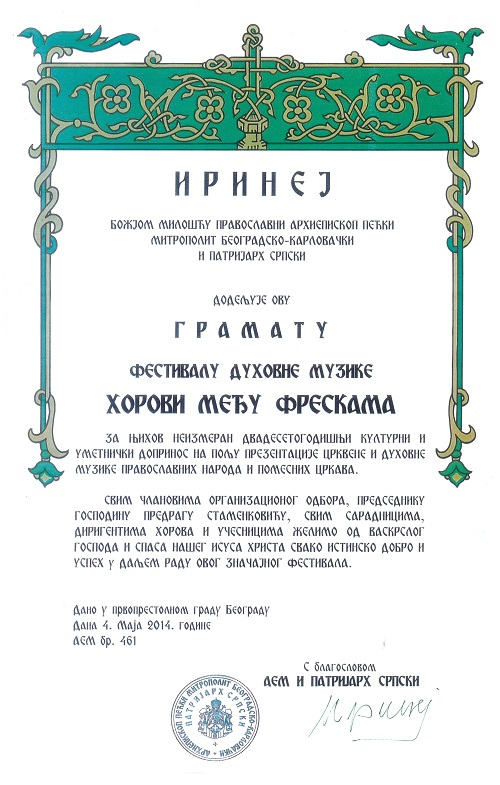

ФЕСТИВАЛ ДУХОВНЕ МУЗИКЕ
ХОРОВИ МЕЂУ ФРЕСКАМА
О нама
- Ауторски тим Фестивала:
- мр Предраг Д. Стаменковић (аутор пројекта регристрованог у Ауторској агенцији Србије - уметнички директор)
- Предраг Миодраг
- Нада Комненовић
- † Бода Марковић
- Продуцент:
- Алексеј Риковски
- Марко Станић
- Службена агенција Фестивала:
- Удружење Хорови међу фрескама, Магеланова 19, Београд
- Оснивачи Удружења Хорови међу фрескама (регистрованог у Агенцији за привредне регистре):
- мр Предраг Д. Стаменковић - овлашћени заступник Удружења
- Предраг Миодраг
- Марко Станић
- Селекциона комисија:
- Светлана Крстић
- Ђорђе Перовић
- Маја Васић
- Жири фестивала:
- Његово преосвештенство Епископ топлички господин Арсеније - председник
- Господин Мирољуб Аранђеловић Расински - композитор
- Господин Ненад Јаковљевић - вокални уметник и диригент
- Музикa уз приказ:
- Стеван Стојановић Мокрањац - Акатист Богородици
- Хор Музичке продукције РТС
- Диригент: Младен Јагушт
ГРАМАТА
Грамата његове светости патријарха Српског Иринеја

×